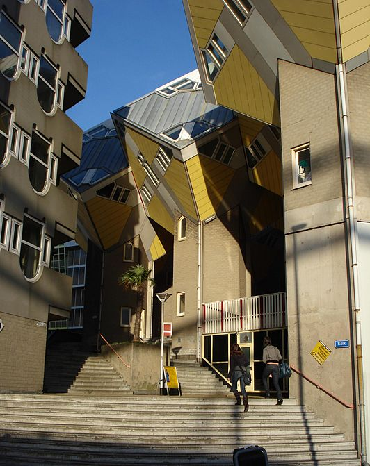
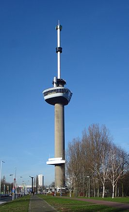
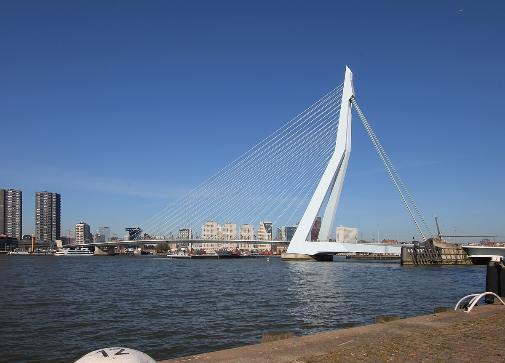

Rotterdam

De kubuswoningen in Rotterdam zijn 38 kubusvormige paalwoningen en 13 bedrijfskubussen bij de Blaak nabij de Oude Haven. Ze zijn gebouwd tussen 1982 en 1984, na een eerste presentatie van de plannen in 1978. Het ontwerp van Piet Blom is een variant op de Helmondse kubuswoning in een iets groter maatraster [1]. Het viaduct op één hoog heet officieel de Overblaak, maar het hele complex staat bekend als het Blaakse Bos. De kubuswoningen zijn gebouwd in de vorm van een gekantelde kubus op een paal, en worden ook wel paalwoning of boomwoning genoemd.

De Euromast is een toren in de Nederlandse stad Rotterdam. Met 185 meter is het de hoogste toren van Nederland die open is voor publiek.
Door de vorm is de toren goed herkenbaar in de skyline van Rotterdam.

De Erasmusbrug is naast de Willemsbrug de tweede brug over de Nieuwe Maas in het centrum van Rotterdam in de Haven van Rotterdam en is vernoemd naar de Nederlandse priester en humanist Erasmus. De brug verbindt de wijk Kop van Zuid met het centrum aan de noordzijde van de rivier.